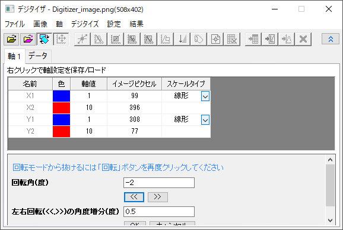
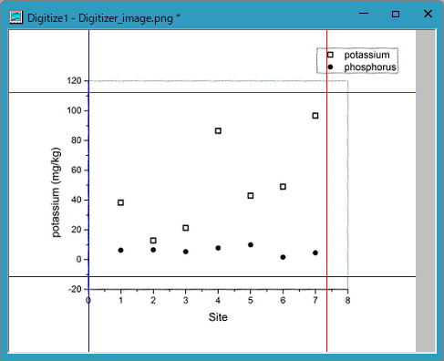
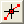
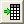
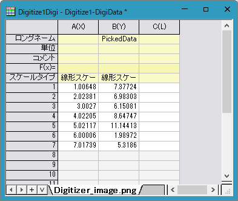

<h1 class="firstheading">デジタイザの使い方</h1><div id="toc" class="toc"><div id="toctitle"><h2>目次</h2></div>
<ul>
<li class="toclevel-1 tocsection-1"><a href="#Summary"><span class="tocnumber">1</span> <span class="toctext">概要</span></a></li>
<li class="toclevel-1 tocsection-2"><a href="#What_you_will_learn"><span class="tocnumber">2</span> <span class="toctext">学習する項目</span></a></li>
<li class="toclevel-1 tocsection-3"><a href="#Steps"><span class="tocnumber">3</span> <span class="toctext">ステップ</span></a>
<ul>
<li class="toclevel-2 tocsection-4"><a href="#Capture_data_points"><span class="tocnumber">3.1</span> <span class="toctext">データポイントのキャプチャ</span></a></li>
<li class="toclevel-2 tocsection-5"><a href="#Move_and_delete_the_picked_points"><span class="tocnumber">3.2</span> <span class="toctext">追加したポイントの移動と削除</span></a></li>
</ul>
</li>
</ul>
</div>
<h2><a name="Summary"></a><span class="mw-headline">概要</span></h2>
<p>デジタイザは、グラフの画像からデータを取得するのに役立ちます。Originにグラフの画像ファイルをインポートし、データポイントを1つずつ数値化することが可能です。
</p><p><br />
</p>
<h2><a name="What_you_will_learn"></a><span class="mw-headline">学習する項目</span></h2>
<ul><li>デジタイザを使ってグラフの画像からデータをキャプチャする</li>
<li>選択した点の位置を修正する</li>
<li>余分な点を削除する</li></ul>
<h2><a name="Steps"></a><span class="mw-headline">ステップ</span></h2>
<h3><a name="Capture_data_points"></a><span class="mw-headline">3.1 データポイントのキャプチャ</span></h3>
<ol>
<li>
メインメニューから<b>ツール：デジタイザ</b>を選択し、<b>デジタイザ</b>ダイアログを開きます。
<li>
ダイアログのツールバーより<b>インポート</b><a  class="image"></a>ボタンをクリックして、&lt;Origin インストールフォルダ&gt;\Samples\Import and Export\にある<i>Digitizer_image.png</i> を選択します。画像がインポートされます。片方が赤色で片方が青色のXY軸が2組表示されます。 
<br /> 
<dl><dd><a  class="image"></a></dd></dl>
<br />
<li>
<b>イメージの回転</b><a  class="image"></a>ボタンをクリックし、さらに<a  class="image"></a>ボタンをクリックして、反時計回りに少し回転させます。回転増分は、<b>左右回転(&lt;&lt;, &gt;&gt;)の角度増分(度)</b>編集ボックスで指定します。 
<br /><br /><a  class="image"></a><br />
<br />グラフイメージの傾きがなくなり、軸ラインと平行になったら、もう一度イメージの<b>回転ボタン</b><a  class="image"></a>をクリックすると、回転モードが終了します。  
<br /><br /><a  class="image"></a><br />
<li>
ダイアログの<b>軸の編集</b><a  class="image"></a>ボタンをクリックします。マウスを使用し、各軸の最小値と最大値を読み取れるように、2組の軸ラインをドラッグして移動します。1つのラインが選択されているとき、ダイアログの対応する行も選択されます。<b>軸値</b>の列に適切な座標値(0, 8, -20, 120) を入力します。<br />
<br /><a  class="image"></a>
<li>
軸を設定したら、<b>手動でポイントを選択</b><a  class="image"></a>ボタンをクリックします。カーソル<a  class="image"></a>をphosphorus（塗りつぶされたシンボル）上に移動して、それぞれの点を順番にダブルクリック（またはシングルクリックと<i>Enterキー</i>）して確定します。<b>GetPoints</b>ダイアログは座標値を表示し、データ表示ウィンドウは画像のピクセルを表示します。 <br />
<br /><a  class="image"></a>
<li>
全てのシンボルを追加できたら、<b>完了</b>をクリックします。
<br /><a  class="image"></a>
<li>
<b>データに行く</b><a  class="image"></a>ボタンをクリックすると取得したデータ座標が入力されたワークシートが開きます。 
<br /><br /><a  class="image"></a>
<li>
<b>イメージに行く</b><a  class="image"></a>ボタンをクリックすると元の画像に戻ります。<b>新しい線</b><a  class="image"></a>ボタンをクリックして、次のデータ（potassium：塗りつぶされていないシンボル）を取得します。取得したデータ座標が入力されたワークシートには新しく2行追加されています。
<li>
<b>手動でポイントを選択</b><a  class="image"></a>ボタンボタンをクリックして、塗りつぶされていないシンボルを手順5、6のように選択します。
<li>
<b>データに行く</b><a  class="image"></a>ボタンをクリックするとワークシートに2種類のデータセットが表示されているのがわかります。
<br /><br /><a  class="image"></a>
<li>
<b>イメージに行く</b><a  class="image"></a>ボタンをクリックします。インポートした画像ファイルに移動します。<b>グラフに行く</b><a  class="image"></a>ボタンをクリックすると、新しくグラフウィンドウが開き、取得したデータ座標のグラフを表示します。 
<br /><br /><a  class="image"></a>
<li><b>デジタイザ</b>ダイアログを閉じると、デジタイザ<a  class="image"></a> ボタンが画像上に表示されます。このボタンをクリックすると、<b>デジタイザ</b>ダイアログを再度開けます。 
</ol>
<p><br />
</p>
<h3><a name="Move_and_delete_the_picked_points"></a><span class="mw-headline">追加したポイントの移動と削除</span></h3>
<ol>
上記のセクションでは、画像から簡単にデータを取得できました。しかし、下図のポイント<b>A</b>や<b>B</b>のように、選択したポイントの位置が誤っていたり、余分に選択してしまった場合、それらを削除することができます。 
<br /><a  class="image"></a>
<br />
<li>ポイント<b>A</b>の位置を修正するには、ポイントをクリックしドラッグして、正しい位置にします。または、ポイントを選択してキーボードの<b>矢印</b>キーを使っても修正できます。
<br /><a  class="image"></a>
<br />
<li>ポイントBを削除するには、ポイントをクリックし右クリックして、コンテキストメニューから削除を選択します。または、ポイントを選択してキーボードの<b>Delete</b>キーを使っても修正できます。
</ol>


    